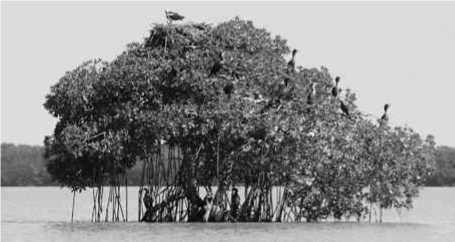
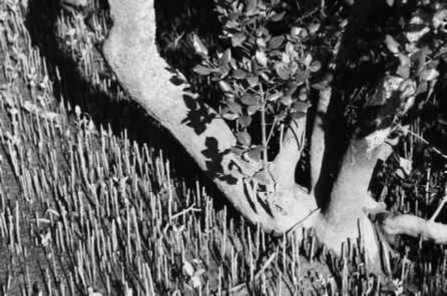
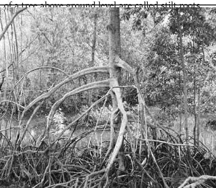
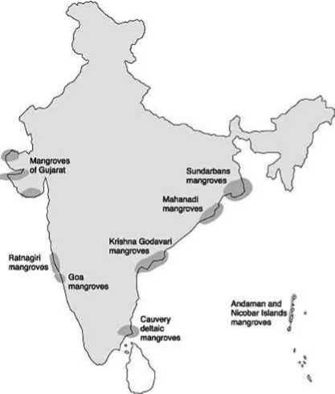
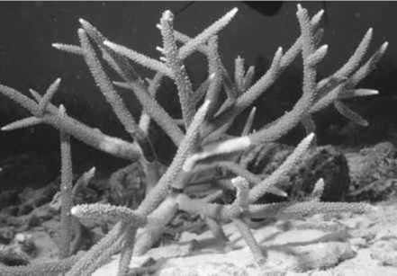
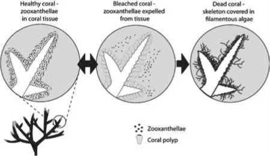

-
• Estuaries are located where river meets the sea. Estuaries are water bodies where the flow of freshwater from river mixes with salt water transported, by tide, from the ocean. Estuaries are the most productive water bodies in the world. They are located at the lower end of a river and are subject to tidal fluctuations.
-
• Estuaries are either once or twice, daily washed by the seawater.
-
• An Estuary is a semi enclosed coastal body of water with one or more rivers or streams flowing into it.
-
• It has a free connection with open sea.
-
• The complete salinity range from 0-35 ppt is seen from the head (river end) to the mouth (sea end) of an estuary.
-
• An estuary has very little wave action, so it provides a calm refuge from the open sea. It provides the shelter for some of the animals.
-
• It is the most productive region as it receives the high amount of nutrients from fresh and marine water.
-
• Estuaries are most heavily populated areas throughout the world, with about 60% of the world’s population living along estuaries and the coast.
Coastal lakes which have their connection with the sea through small openings are better known as lagoons or backwaters. They exhibit a gradient in salinity from freshwater to marine depending upon the extent of influence of the sea water.
Estuary Formation:
Most estuaries can be grouped into four geomorphic categories based on the physical processes responsible for their formation:
(1) rising sea level; (2) movement of sand and sandbars; (3) glacial processes; and (4) tectonic processes.
-
• Estuaries are typically classified by their geomorphological features or by water circulation patterns and can be referred to by many different names, such as bays, harbors, lagoons, inlets, etc.
-
• The banks of estuarine channels form a favoured location for human settlements, which use the estuaries for fishing and commerce, but nowadays also for dumping civic and industrial waste.
-
• Estuaries are usually biologically highly productive zones.
-
• They also act as a filter for some dissolved constituents in river water; these precipitate in the zone where river water meets seawater.
-
• More important is the trapping of suspended mud and sand carried by rivers which leads to delta formations around estuaries.
-
• A healthy estuary supports a host of plants and animals. It stores and recycles Nutrients, traps sediment and forms a buffer between coastal catchments and the marine environment. It also absorbs traps and detoxifies pollutants, acting as a natural water filter. When all such processes remain functional an estuary is considered to be healthy state.
-
• Estuaries support diverse habitats, such as mangroves, salt marshes, sea-grass, mudflats etc.
-
• Only certain types of plants and animals specially adapted to the “brackish” estuarine waters flourish in the estuaries. Factors influencing the growth and distribution of organism in an estuary are its salinity and the amount of flooding.
-
• Estuaries are homes to all kind of terrestrial or landbased plants and animals, such as wood storks, pelicans, coniferous and deciduous trees and butterflies. Estuaries are also homes to unique aquatic plants and animals, such as sea turtles and sea lions, sea catfish, saltworts, eelgrass, saltgrasses, cordgrasses, sea grass, sedge and bulrush.
-
• Predators are important to the estuary because of their end position in most consumer food chains.
-
• Habitat, breeding and nursery grounds for plants and animals
-
• Biological productivity
-
• Social Benefits
-
• Community values
-
• Indigenous values
-
• Recreation values
-
• Knowledge/Research values
-
• Economic Benefits
-
• Commercial fishing
-
• Ports and harbours
-
• Navigation
-
• Tourism
-
• Agriculture, aquaculture and industry
-
• Storm and erosion protection
-
4.6.5. India Estuarine Ecosystem
-
• The Country has 14 major, 44 medium and 162 minor rivers drains into the sea through various estuaries.
-
• Estuaries are an important and distinct component of the coastal landscape with highly complex ecosystems, varying physical - chemical properties and having highly diverse flora and fauna.
-
• Major estuaries occur in the Bay of Bengal. Many estuaries are locations of some of the major seaports.
-
• Most of the India’s major estuaries occur on the east coast. In contrast, the estuaries on the west coast are smaller.
-
4.6.6. Issues of Indian Estuarine Ecosystem
-
• Changes in water flow in various estuaries, either far in excess or much lower than required (e.g., Hooghly, Narmada, Krishna, Godavari, Pulicat etc.)
-
• Modifications of the estuarine catchments (e.g Most of the Indian estuaries)
-
2. Pollution & Water Quality
-
3. Recreation And Tourism
-
• Recreational boating (e g., Hooghly WB; Chilika, Orissa)
-
• Recreational fishing kg., Chilika)
-
• Navigation (e g., Hooghly)
-
• Dredging (e.g., Hooghly)
-
• Shipping (r g., Hooghly)
-
• Expansion of urban and rural settlements (e.g, Hooghly, Krishna, Cauvery, Pulicat)
-
• Marinas, groynes, land reclamation and other structures (e.g., Hooghly, Pulicat)
-
• Mining & Industries (e.g., Hooghly, Zuari, Goa)
-
• Agriculture (e.g., all the Estuaries)
-
• Dumping of solid wastes (eg. all the Indian estuaries)
-
6. Commercial Fishing & Aquaculture
-
• Over exploitation of target fish stock due to increased demand (e.g., all the Indian estuaries)
-
• Reclaiming the fringed areas for intensive aquaculture in pens ,
-
• obstructing the migratory routes of fish and prawn recruitment (e.g., Chilika, Pulicat)
-
• Polluting the environment through feeding of stocked fish and prawn in pens (Chilika)
-
• Destruction of biodiversity through prawn seed collection and operation of small-meshed nets (e.g., Hooghly, Chilika, Pulicat)
-
• Submergence of catchment areas due to rise in water level (e.g., all the major Indian estuaries)
-
• Change in biodiversity profile, affecting the production and productivity (e.g., all the major Indian estuary)

Mangrove tree
Do you know?
Snakes generally lay eggs, some snakes, such as boas, rattlesnakes and garter snakes, give birth to live
young.
-
4.7.1. Characteristics of mangroves
-
• They are basically evergreen land plants growing on sheltered shores, typically on tidal flats, deltas, estuaries, bays, creeks and the barrier islands.
-
• The best locations are where abundant silt is brought down by rivers or on the backshore of accreting sandy beaches.
-
• Their physiological adaptation to salinity stress and to water logged anaerobic mud is high.
-
• They require high solar radiation and have the ability to absorb fresh water from saline/brackish water.
-
• It produces pneumatophores (blind roots) to overcome respiration problem in the anaerobic soil conditions.

Pneumatophores
-
• Mangroves occur in variety of configurations. Some species (e.g. Rhizophora) send arching prop roots down into the water. While other (e.g. Avicennia) send vertical “Pneumatophores” or air roots up from the mud.
-
• Most mangrove vegetation has lenticellated bank which facilitates more water loss, produces coppices. Leaves are thick and contain salt secreting glands.
-
• Mangroves exhibit Viviparity mode of reproduction. i.e. seeds germinate in the tree itself (before falling to the ground). This is an adaptative mechanism to overcome the problem of germination in saline water.
-
• Some secrete excess salt through their leaves as if you look closely, you can see crystals of salt on the back of the leaves; others block absorption of salt at their roots.
• Adventitious roots which emerged from the main trunk

ifofiv
irl Irt'i
Stilt Roots

The word amphibian means two-lives. Amphibians spend their lives in the water and on land. All amphibians begin their life in water with gills and tails. As they grow, they develop lungs and legs for their life on land. Members of this animal class are frogs, toads, salamanders, newts, and caecilians or blindworms. Amphibians shed their skin as they grow. Usually the shed skin is eaten.
-
4.7.2. Mangrove profile in India
-
• The mangroves of Sundarbans are the largest single block of tidal holophytic mangroves of the world. The major species of this dense mangrove forest include Herritiera fames, Rhizophora spp., Bruguiera spp., Ce-riops decandra, Sonneratia spp. and Avicennia spp., Nypa fruticans are found along the creeks. This mangrove forest is famous for the Royal Bengal Tiger and crocodiles. Mangrove areas are being cleared for agricultural use.
-
• The mangroves of Bhitarkanika (Orissa), which is the second largest in the Indian sub continent, harbour high concentration of typical mangrove species and high genetic diversity.
-
• Mangrove swamps occur in profusion in the intertidal mudflats on both side of the creeks in the Godavari-Krishna deltaic regions of Andhra Pradesh.
-
• Mangroves of Pichavaram and Vedaranyam are degraded mainly due to construction of aquaculture ponds and salt pans.

Indian Mangrove Profile
-
• On the west coast of India, mangroves, mostly scrubby and degraded occur along the intertidal region of estuaries and creeks in Maharashtra, Goa and Karnataka.
-
• The mangrove vegetation in the coastal zone of Kerala is very sparse and thin.
-
• In Gujarat (north-west coast) mangroves Avicennia marine, Avicennia officinalis and Rhizophora mucronata are found mainly in Gulf of Kachchh and the Kori creek.
-
• Mangroves are of scrubby type with stunted growth, forming narrow, discontinuous patches on soft clayey mud.
-
• The condition of the mangroves is improving especially in the Kori creek region, which is a paleodelta of the Indus river.
-
• In size, mangroves range from bushy stands of dwarf mangroves found in Gulf of Kuchchh, to taller stands found in the Sunderbans.
-
• On the Andaman & Nicobar Islands, the small tidal estuaries, neritic inlets and the lagoons support a dense and diverse undisturbed mangrove flora.
-
• Mangrove plants have (additional) special roots such as prop roots, pneumatophores which help to impede water flow and thereby enhance the deposition of sediment in areas (where it is already occurring), stabilize the coastal shores, provide breeding ground for fishes.
-
• Mangroves moderate monsoonal tidal floods and reduce inundation of coastal lowlands.
-
• It prevents coastal soil erosion.
-
• It protects coastal lands from tsunami, hurricanes and floods.
-
• Mangroves enhance natural recycling of nutrients.
-
• Mangrove supports numerous flora, avifauna and wild life.
-
• Provide a safe and favorable environment for breeding, spawning, rearing of several fishes.
-
• It protects coastal inland from adverse climatic elements.
-
• It supplies woods, fire wood, medicinal plants and edible plants to local people.
-
• It provides numerous employment opportunities to local communities and augments their livelihood.
Do you know?
The King Cobra is not only an excellent climber but a super swimmer as well. They live in forests near
streams.
Fine, anoxic sediments deposited under mangroves act as sinks for a variety of heavy (trace) metals which are scavenged from the overlying seawater by colloidal particles in the sediments. By cleaning our air, they taking in carbon dioxide, storing the carbon in their roots, leaves, branches and in its surrounding silt, and release oxygen back to the atmosphere, along with a little methane gas.
-
• They are destroyed for conversion of area for agricultural purpose, fuel, fodder and, salinization, minig, oil spills, aquacultural (shrimp farming), use of chemical pesticides & fertilizers, industrial purposes.
-
• Coral is actually a living animal. Coral has a symbiotic relationship (each gives something to the other and gets something back in return) with ‘zooxanthellae’ microscopic algae which live on coral [i.e. instead of living on the sea floor, the algae lives up on the coral which is closer to the ocean surface and so that the algae gets adequate light].

Coral
-
• Zooxanthellae assist the coral in nutrient production through its photosynthetic activities. These activities provide the coral with fixed carbon compounds for energy, enhance calcification ,and mediate elemental nutrient flux.
-
• The tissues of corals themselves are actually not the beautiful colors of the coral reef, but are instead clear (white). The corals receive their coloration from the zooxanthellae living within their tissues.
-
• The host coral polyp in return provides its zooxanthellae with a protected environment to live within, and a steady supply of carbon dioxide for its photosynthetic processes.
-
• There are two types of corals: hard corals and soft corals, such as sea fans and gorgonians. Only hard corals build reefs.
-
• The builders of coral reefs are tiny animals called polyps. As these polyps thrive, grow, then die, they leave their limestone (calcium carbonate) skeletons behind. The limestone is colonized by new polyps. Therefore, a coral reef is built up of layers of these skeletons covered ultimately by living polyps.
-
• The reef-building, or hermatypic corals can form a wide range of shapes. Coral reefs may be branched, table-like, or look like massive cups, boulders or knobs.
-
• While the majority of coral reefs are found in tropical and sub-tropical water, there are also deep water corals in colder regions.
-
4.8.1. Cold Water Corals:
-
• Cold-water corals inhabit deep, cold (39-55 degrees F), water. The United Nations Environment Programme reports that there are more cold-water coral reefs worldwide than tropical reefs.
-
• There are only about 6 different coral species associated in building with these reefs. The largest coldwater coral reef is the Rost Reef off Norway.
-
• They occur in shallow tropical areas where the sea water is clean, clear and warm.
-
• The coral reef cover in Indian waters is roughly estimated upto 19,000 sq. Km.
-
• Coral reefs are one of the most productive and complex coastal ecosystems with high biological diversity.
-
• The high productivity is owing to the combination of its own primary production and support from its surrounding habitat.
-
• Reef building corals are a symbolic association of polyps (coral animals) and ‘zooxanthellae’ (the microscopic algae)
-
• The corals are generally slow growing colonies of animals while zooxanthellae are fast growing plants.
-
• Even though corals live in nutrient poor waters, their capability to recycle the scarce nutrients (by the whole nutrient community) is enormous.
-
• In coral reef ecosystem, many invertebrates, vertebrates, and plants live in close association to the corals, with tight resource coupling and recycling, allowing coral reefs to have extremely high productivity and biodiversity, such that they are referred to as ‘the Tropical Rainforests of the Oceans’.
-
4.8.3. Classification and their location
-
• The coral reefs are classified depending on their locations into fringing, patch, barrier and atoll.
-
• The fringing reefs are contiguous with the shore and they are the most common - by occurring reef form, found in Andamans.
-
• Patch reefs are isolated and discontinuous patches, lying shoreward of offshore reef structures as seen in the Palk bay, Gulf of Mannar and Gulf of Katchchh.
-
• Barrier reefs are linear offshore reef structures that run parallel to coastlines and arise from submerged shelf platforms. The water body between the reef and the shore is termed as lagoon. Barrier reefs are seen in Nicobar and Lakshadweep.
-
• Atolls are circular or semi circular reefs that arise from subsiding sea floor platforms as coral reef building keeps ahead of subsidence. The examples are the atolls of Lakshadweep and Nicobar.
-
• When the reef building do not keep pace with subsidence, reefs become submerged banks as seen in Lakshadweep.
-
• Sea grasses grow on Kavaratti atoll, mangroves are prevalent on Andaman and Nicobar coral reefs.
-
• Among the four major reef areas of India, Andaman and Nicobar Islands are found to be very rich in species diversity followed by the Lakshadweep Islands, the Gulf of Mannar and finally the Gulf of Kachchh.
-
4.8.4. Functions of Coral Reefs
-
• Coral reefs are natural protective barriers against erosion and storm surge.
-
• The coral animals are highly adapted for capturing plankton from the water, thereby capturing nutrients
-
• Largest biogenic calcium carbonate producer
-
• They provide substrate for mangroves
-
• Coral reefs provide habitat for a large variety of animals and plants including avifauna.
-
1. Natural causes may be due to the outbreak of reef destroying mechanisms, “bleaching” and depletion of essential symbiotants.
-
2. Anthrogenic causes - may be due to chemical pollution (pesticides, cosmetics, etc), industrial pollution, mechanical damage, nutrient loading or sediment loading, Dredging, shipping, tourism, mining or collection, thermal pollution, intensive fishimg,etc.
-
• Coral reef ecosystems world-wide have been subject to unprecedented degradation over the past few decades. Disturbances affecting coral reefs include anthropogenic and natural events. Recent accelerated coral reef decline seems to be related mostly to anthropogenic impacts (overexploitation, overfishing, increased sedimentation and nutrient overloading. Natural disturbances which cause damage to coral reefs include violent storms, flooding, high and low temperature extremes, El Nino Southern Oscillation (ENSO) events, subaerial exposures, predatory outbreaks and epizootics.
-
• Coral reef bleaching is a common stress response of corals to many of the various disturbances mentioned above.
-
• Bleaching, or the paling of coral colour occurs when
-
( i) the densities of zooxanthellae decline and / or
-
( ii) the concentration of photosynthetic pigments within the zooxanthellae fall.

Coral Bleaching
-
• When corals bleach they commonly lose 60-90% of their zooxanthellae and each zooxanthella may lose 5080% of its photosynthetic pigments.
-
• If the stress-causing bleaching is not too severe and if it decreases in time, the affected corals usually regain their symbiotic algae within several weeks or a few months.
-
• If zooxanthellae loss is prolonged, i.e. if the stress continues and depleted zooxanthellae populations do not recover, the coral host eventually dies.
-
• High temperature and irradiance stressors have been implicated in the disruption of enzyme systems in zooxanthellae that offer protection against oxygen toxicity.
-
• Photosynthesis pathways in zooxanthallae are impaired at temperatures above 30 degrees C, this effect could activate the disassociation of coral / algal symbiosis.
-
• Low- or high-temperature shocks results in zooxanthellae low as a result of cell adhesion dysfunction.
-
• This involves the detachment of cnidarian endodermal cells with their zooxanthellae and the eventual expulsion of both cell types.
-
4.8.7. Ecological causes of coral bleaching
-
• As coral reef bleaching is a general response to stress, it can be induced by a variety of factors, alone or in combination. It is therefore difficult to unequivocally identify the causes for bleaching events. The following stressors have been implicated in coral reef bleaching events.
Temperature (Major Cause)
-
• Coral species live within a relatively narrow temperature margin, and anomalously low and high sea temperatures can induce coral bleaching. Bleaching is much more frequently reported from elevated sea water temperature. Bleaching events also occur during sudden temperature drops accompanying intense upwelling episodes, seasonal cold-air outbreaks.
Do you know?
All spiders produce silk but not all spiders spin webs. Silk is used for climbing, to create webs, to build smooth walls in burrows, build egg sacs, and wrap prey.
Solar Irradiance
-
• Bleaching during the summer months, during seasonal temperature and irradiance maxima often occurs disproportionately in shallow-living corals and on the exposed summits of colonies. Solar radiation has been suspected to play a role in coral bleaching. Both photo-syntheticaly active radiation (PAR, 400-700nm) and ultraviolet radiation (UVR, 280-400nm) have been implicated in bleaching.
Subaerial Exposure
Sedimentation
-
• Relatively few instances of coral bleaching have been linked solely to sediment. It is possible, but has not been demonstrated, that sediment loading could make zoox-anthellate species more likely to bleach.
Fresh Water Dilution
-
• Rapid dilution of reef waters from storm-generated precipitation and runoff has been demonstrated to cause coral reef bleaching. Generally, such bleaching events are rare and confined to relatively small, nearshore areas.
Inorganic Nutrients
-
• Rather than causing coral reef bleaching, an increase in ambient elemental nutrient concentrations (e.g. ammonia and nitrate) actually increases zooxanthellae densities 2-3 times. Although eutrophication is not directly involved in zooxanthellae loss, it could cause secondary adverse affects such as lowering of coral resistance and greater susceptibility to diseases.
Xenobiotics
Zooxanthellae loss occurs during exposure of coral to elevated concentrations of various chemical contaminants, such as Cu, herbicides and oil. Because high concentrations of xenobiotics are required to induce zooxanthellae loss, bleaching from such sources is usually extremely localized and / or transitory .
Epizootics
-
• Pathogen induced bleaching is different from other sorts of bleaching. Most coral diseases cause patchy or whole colony death and sloughing of soft tissues, resulting in a white skeleton (not to be confused with bleached corals). A few pathogens have been identified the cause translucent white tissues, a protozoan.
Do you know?
India updated its National Biodiversity Action Plan (NBAP) and also developed 12 National Biodiversity Targets in 2014m line with 20 global Aichi biodiversity targets.
4.9 GOVERNMENT MEASURES TO PROTECT MANGROVE FOREST AND CORAL REEFS (OR COASTAL ECOSYSTEM)
-
• The Government seeks to protect, sustain and augment mangroves and coral reef in the country by both regulatory and promotional measures.
-
• Under the regulatory measures, the Coastal Regulation Zone (CRZ) Notification (2011) and the Island Protection Zone (IPZ) Notification 2011 regulates the development activities along the Sea coast and tidal influenced water bodies.
The mangroves and coral reefs areas are categorized as ecological sensitive areas (CRZ-I) where no new constructions are permitted except projects relating to Department of Atomic Energy; pipelines, conveying systems including transmission lines; installation of weather radar for monitoring of cyclones movement and prediction by Indian Meteorological Department and construction of trans harbour sea link and without affecting the tidal flow of water.
To enforce and implement the CRZ and IPZ Notifications, the Ministry of Environment and Forests has constituted the National and State/UT level Coastal Zone Management Authorities.
Do you know?
The Ministry has partnered with the United Nations Development Programme (UNDP) in a global project on Biodiversity Finance Initiative (BIOFIN).
The Ministry of Environment & Forests also provides financial assistance to Coastal States/Union Territories, who so request, under its Centrally Sponsored Scheme for conservation and management of mangroves and coral reef.
In addition Coral reef is included in Schedule I of the Wild Life Protection Act, 1972 which affords it the highest degree of protection.
Further Protected Areas, viz.4 National Parks, 96 Sanctuaries and 3 Marine Biosphere Reserve have been created all over the country under the provisions of the Wild Life (Protection) Act, 1972 to conserve marine life including coral reef.
The Wildlife Crime Control Bureau has also been set up to strengthen the enforcement of law for control of poaching and illegal trade in wildlife and its products.
-
• Being implemented from 1991.
-
• Assesses the health of coastal waters and facilitates management of pollution-related issues
-
• Programme was restructured and modified in 20002001 to include pollution monitoring; liaison, regulation and legislation; and consultancy services.
-
4.10.2. Land Ocean Interactions in the Coastal Zone (LOICZ)
-
• Launched in 1995
-
• Investigates the effects of global change on the coastal zone
-
• Aims to develop, on a scientific basis, the integrated management of coastal environments
Do you know?
Male snakes will try to attract a female by doing a type of ‘play fighting’ with other males to gain female attention. They do not try to kill each other. just win the fight!
-
4.10.3. Integrated Coastal and Marine Area Management (ICMAM)
-
• Launched in 1998
-
• Aims at integrated management of coastal and marine areas.
-
• Model plans for Chennai, Goa and Gulf of Kutch being prepared
-
4.10.4. Society of Integrated Coastal Management (SICOM)
-
4.10.5. Institutions for Coastal Management
-
• The Notification on Coastal Regulation Zone (CRZ), 1991 (as amended from time to time) aims at protecting coastal stretches in India.
-
• India has created institutional mechanisms such as National Coastal Zone Management Authority (NCZMA) and State Coastal Zone Management Authority (SCZMA) for enforcement and monitoring of the CRZ Notification.
-
• These authorities have been delegated powers under Section 5 of the Environmental (Protection) Act, 1986 to take various measures for protecting and improving the quality of the coastal environment and preventing, abating and controlling environmental pollution in coastal areas.
The Ganga Action Plan was launched on 14th January 1986 with the main objective of pollution abatement, to improve water quality by interception, diversion and treatment of domestic sewage and toxic and industrial chemical wastes present, from identified grossly polluting units entering in to the river.
After reviewing the effectiveness of the “Ganga Action Plan”, the Government announced the “Mission Clean Ganga” project on 31st December, 2009 with the objective that by 2020, no municipal sewage and industrial waste would be released in the river without treatment, with the total budget of around Rs.15,000 crore.
The Government also established the National Ganga River Basin Authority (NGRBA), chaired by the Prime Minister, with the objective to ensure effective abatement of pollution and conservation of the river Ganga, by adopting a river basin approach for comprehensive planning and management.
-
4.12. NAMAMI GANGA PROGRAM
Accordingly, an Integrated Ganga Conservation Mission called “NamamiGange” has been proposed to be set up and a sum of Rs. 2,037 crores has been set aside for the purpose of conservation and improvement of the Ganga.
In addition a sum of Rs. 100 crores has been allocated for developments of Ghats and beautification of River Fronts at Kedarnath, Haridwar, Kanpur, Varanasi, Allahabad, Patna and Delhi in the current financial year.
Accordingly, NamamiGange approaches Ganga Rejuvenation by consolidating the existing ongoing efforts and planning for a concrete action plan for future.
The interventions at Ghats and River fronts will facilitate better citizen connect and set the tone for river centric urban planning process.
Following are proposed to be taken up under NamamiGange program:
-
• Project prioritization in coordination with Ministry of Urban Development.
-
• Incentive for states to take up projects on Ganga Main-stem by providing an additional share of central grants for sewerage infrastructure.
-
• Uniform standards for both MoUD scheme and NamamiGangeprogramme, 10 years mandatory O&M by the same service provider at par with NGRBA programme and PPP, Mandatory reuse of treated water
-
• Expanding coverage of sewerage infrastructure in 118 urban habitations on banks of Ganga- estimated cost by MoUD is Rs 51000 Crores
-
• Making Zero Liquid Discharge mandatory
-
• Rationalized water tariff to encourage reuse
-
• Real time water quality monitoring
-
• Enforcing River Regulatory Zones on Ganga Banks
-
• Rational agricultural practices, efficient irrigation methods
-
• Restoration and conservation of wetlands
-
(v) Ensuring ecological rejuvenation by conservation of aquatic life and biodiversity
-
(vi) Promotion of Tourism and Shipping in a rational and sustainable manner
-
(vii) Knowledge Management on Ganga through Ganga Knowledge Centre leading to a Ganga University of River Sciences
NRI Ganga Fund
NRIs have been a very important contributor to the development process in India, in areas such as education, health and preservation of culture. In this context, to harness their enthusiasm to contribute towards the conservation of the river Ganga, NRI Fund for Ganga will be set up which will finance special projects. NRI Ganga Fund could be setup under the aegis of Ministry of Overseas Indian Affairs or Ministry of Finance with focus on funds sourcing and corpus management.
The main features of “Clean Ganga Fund (CGF)” are:
Considering that there is a need to increase people’s participation from across the country and abroad, it is proposed to set up a “Clean Ganga Fund (CGF)” with voluntary contributions.
-
• CGF will have the objective of contributing to the national effort of improving the cleanliness of the river Ganga with the contributions received from the residents of the country, NRIs/ PIO and others.
-
• CGF will be operated through a bank account by a Trust to be headed by the finance minister. The secretariat of the Trust will be set up in Ministry of Water Resources, River Development and Ganga Rejuvenation under the Mission Director, Clean Ganga.
-
• Domestic donors to the fund shall be eligible for tax benefits as in the case of “Swachch Bharat Kosh”. Foreign donors could get suitable tax exemptions in domestic law, wherever permissible.
-
• CGF will explore the possibility of setting up daughter funds in other jurisdictions/countries of high donor interest such as USA, UK, Singapore, UAE, etc. to enable tax benefits to donors in their respective jurisdictions.
-
• CGF will be catalytic in nature and will identify and fund specific projects which could be pilot projects, R&D projects, innovative projects or other focused projects. The Fund will define specific and measurable objectives to form the basis for planning, funding, and evaluation.
Broad activities that will be financed from the Clean Ganga Fund (CGF) Fund are:
-
• Activities outlined under the ‘NamamiGange’ programme for cleaning of river Ganga.
-
• Control of non-point pollution from agricultural runoff, human defecation, cattle wallowing, etc.
-
• Setting up of waste treatment and disposal plants along the river around the cities.
-
• Conservation of the biotic diversity of the river.
-
• Community based activities to reduce polluting human interface with the river.
-
• Development of public amenities including activities such as Ghat redevelopment.
-
• Research and Development and innovative projects.
-
• Research and Development projects and innovative projects for new technology and processes for cleaning the river.
-
• Independent oversight through intensive monitoring and real time reporting.
-
• Any other activity as approved by the Trust.
Recent Measures
-
• Union Environment Ministry has taken up a new strategy for conservation and rejuvenation of major river water systems. The new strategy takes into account the entire river basin, which is contributing its flow to the particular river stretch for conservation.
-
• The present strategy for conservation of rivers is limited only to tackling pollution load from domestic wastewater and regulation of industrial pollution. The new approach is a holistic one for rejuvenation of rivers, wherein water management and environment management are taken together for implementation to restore the lost ecology of the polluted stretches of the rivers.